AMBER CHEN
About Me
Hey there! I’m Amber, a third-year undergraduate student majoring in Geography
and double-minoring in GIS&T and English at UCLA. My research interests
span several topics, including housing equity and environmental justice.
I am also
highly interested in population demographics, both in LA County, nationally and worldwide.
I have academic experience using ArcGIS, QGIS, and SQL for spatial analysis and cartography.
Some of my other skills include designing with Adobe InDesign, applying R in
statistical research, and performing data analysis with Microsoft Excel. In
the summer before my sophomore year, I interned with Asian Americans Advancing
Justice – Atlanta. I gained hands-on experience with data analysis as I navigated
large demographic datasets from the U.S. Census Bureau and the Georgia
Secretary of State.
I am currently conducting research with UCLA's Luskin School of Public Affairs,
focusing on housing inequity for Native Americans across the United States. As a GIS researcher, I
have plenty of experience manipulating data in ArcGIS Pro, publishing interactive web maps
with ArcGIS Online, as well as collaborating with professors and other student researchers. I am always
eager to learn new skills: right now, I am taking a Remote Sensing class and conducting an agricultural research project
on how crop health has changed in the Central Valley over the past 20 years, using NDVI as an indicator.
Outside of school, I often volunteer with seniors or tutor younger students in English.
My passion lies in helping others learn — whether through language or academic
research. As a GIS&T scholar, I am eager to share the potential of this emerging
field and inspire others to explore it.
NDVI Change in the San Joaquin Valley, 2005-2020
See Project Website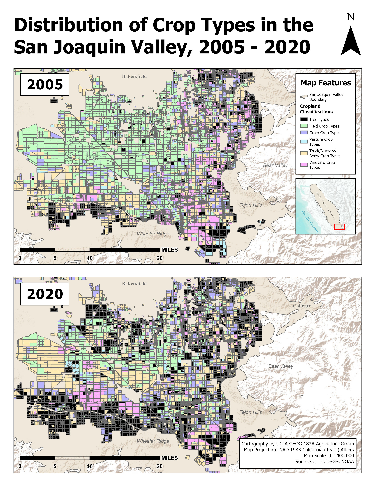
In this project, I used ENVI and ArcGIS Pro to study agricultural cropping changes in the San Joaquin Valley.
I first downloaded Landsat ARD Surface Reflectance imagery from August of 2005 and 2020. Next, I utilized ENVI
to mosaic multiple images from each year, and calculated the Normalized Vegetation Index (NDVI) for the areas
that overlapped between the resulting mosaicked images.
Then, my research team applied an unsupervised classification in ENVI to identify different crop types, focusing
particularly on tree crops to determine how the valley's crop types have changed over time. Lastly, I compared our
results to existing USGS research on the Central Valley's crop distribution—displayed on the left—which supported
our findings.
The USGS data—in the form of 321,894 polygons, each representing individual fields—were published in 2024 to determine
cropping trends and patterns in the Central Valley. We mapped the entire dataset in ArcGIS Pro, then narrowed in on
our study area in the southern end of the San Joaquin Valley.
Here, our main point of interest are the black parcels, which represent all tree crops. Note that I combined the
original dataset's "Citrus & Mediterranean Crop Type" and "Deciduous Fruit & Nut Crop Type" categories to create
our very own "Tree Types" category. My remaining five categories—Field Crops, Grain Crops, Pasture Crops,
Truck/Nursery/Berry Crops, and Vineyard crops—were also created from combining multiple related USGS classes, for
the sake of simplicity.
From this map, we observed that tree crops increased significantly in the southern part and the northeastern
(or general northern side) of our study area from 2005 to 2020, paralleling the results from our earlier unsupervised
classification.
A statistical breakdown of crop type percentage by year revealed that the increase in tree crops became more pronounced
the further south we fixated our area of analysis: +8% in the Central Valley, +11% in the San Joaquin Valley, and +24%
in our study area.
Ultimately, our study area is a dramatic representation of the patterns in the greater San Joaquin Valley. Additionally,
since water stress usually hits the San Joaquin Valley first, the area is in turn a good predictor of what trends will
sweep over the entire Central Valley once water stress becomes ubiquitous across the region. Overall, the data demonstrate
that Central California's response to water stress is to increase the proportion of tree crops relative to other crops.
Analysis of Chinese Population Change Amid Rising Housing Costs in LA County, from 2015 to 2023
See Full Project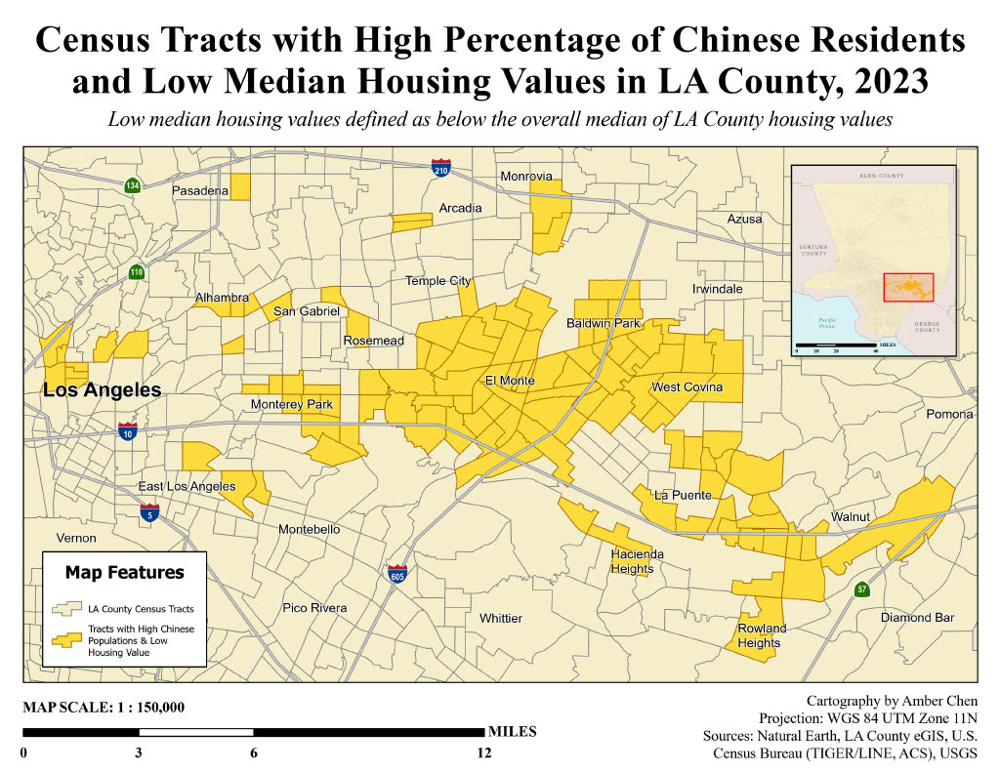
In December 2025, I conducted an independent academic research project to determine whether Chinese
population movement and clustering across LA County were influenced by fluctuating housing values
over time. Using ArcGIS Pro, I ran the Hot Spot Analysis (Getis Ord Gi*) tool to identify tracts
with significant Chinese populations, then performed calculations to pinpoint zones of Chinese
population decline and expansion. Then, I intersected this layer with tracts containing low median
housing values compared to the overall county median.
Through spatial analysis, I observed that tracts from 2023 contained high Chinese population concentrations
while remaining on the lower end of the housing market compared tracts from 2015. This suggests that
between 2015 and 2023, Chinese residents became more concentrated in areas that remained relatively
affordable within the broader Los Angeles housing market. Even as housing values drastically increased in
surrounding areas, housing costs in the San Gabriel Valley remained relatively stable or increased at rates
lower than broader market trends, allowing most Chinese residents to remain in their homes. While potential
displacement and expansion appear in Beverly Hills, Pasadena, the San Fernando Valley, and a few other tracts,
the San Gabriel Valley remains relatively stable. Moderate displacement is observed in some tracts, but the
measured increases in housing value are not substantial enough when adjusted for inflation to firmly attribute
Chinese emigration to rising costs. These findings are limited by the availability of housing and population data,
as well as null values in tracts that reported Chinese populations of zero in 2015, which could not be computed
in the percent change calculations.
View my full methods and results in my research paper linked above!
Georeferenced North America Lake Elevation Image
View Lake Elevation Analysis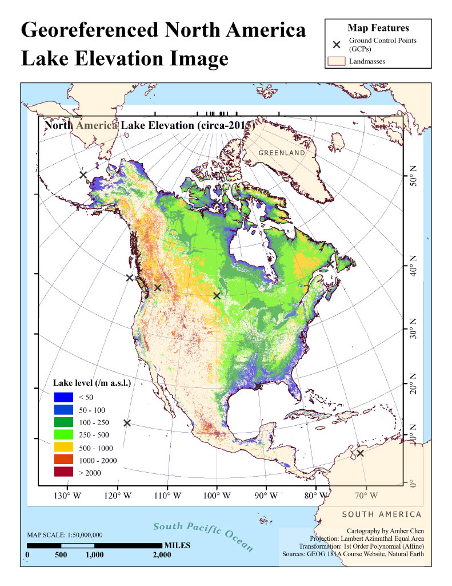
Skills: Raster Georeferencing
In-N-Out Location Density in LA County
View Full Location Density Maps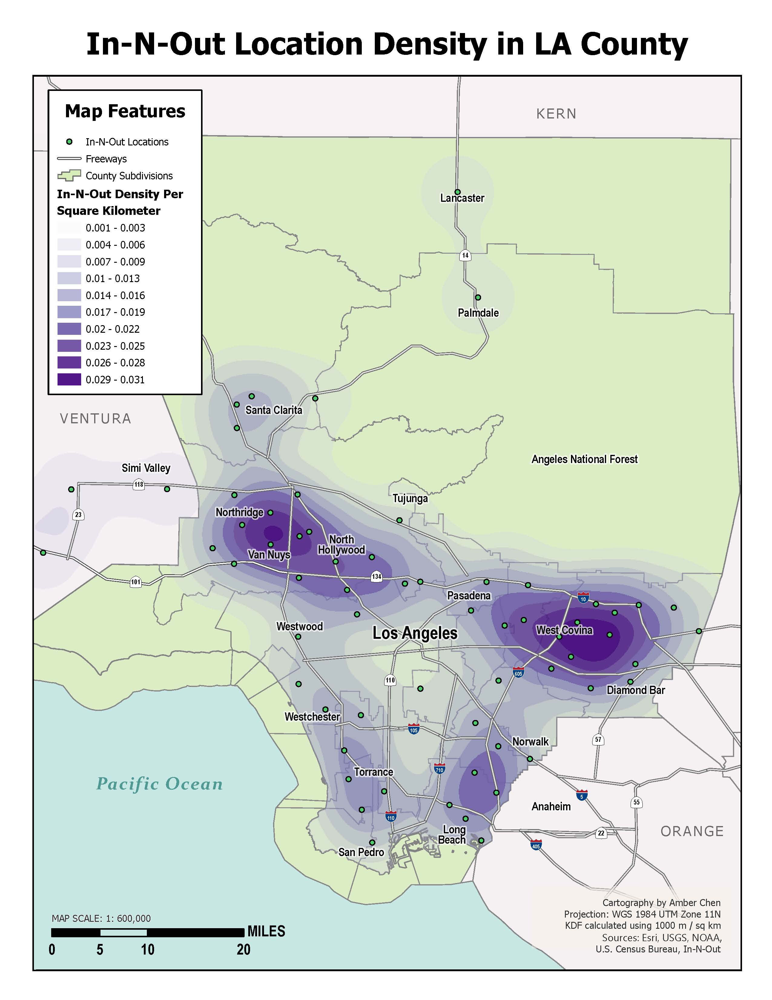
Skills: Suitability Analysis, Raster Spatial Analysis
Tokyo Volcanoes Multi-Ring Buffer Analysis
View Multi-Ring Buffer Map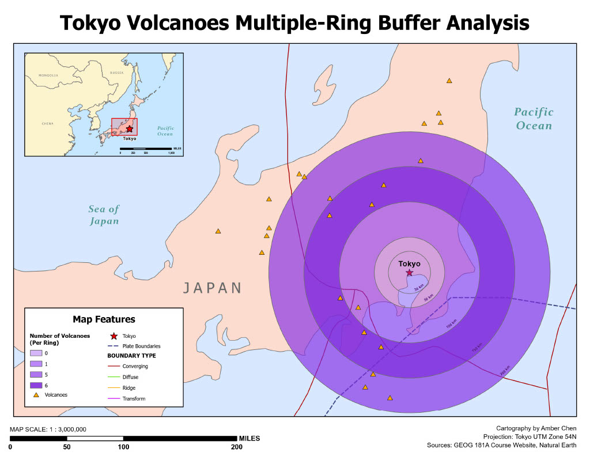
Skills: Vector Spatial Analysis
UCLA New Satellite Campus Location Evaluation
View Suitability Analysis Project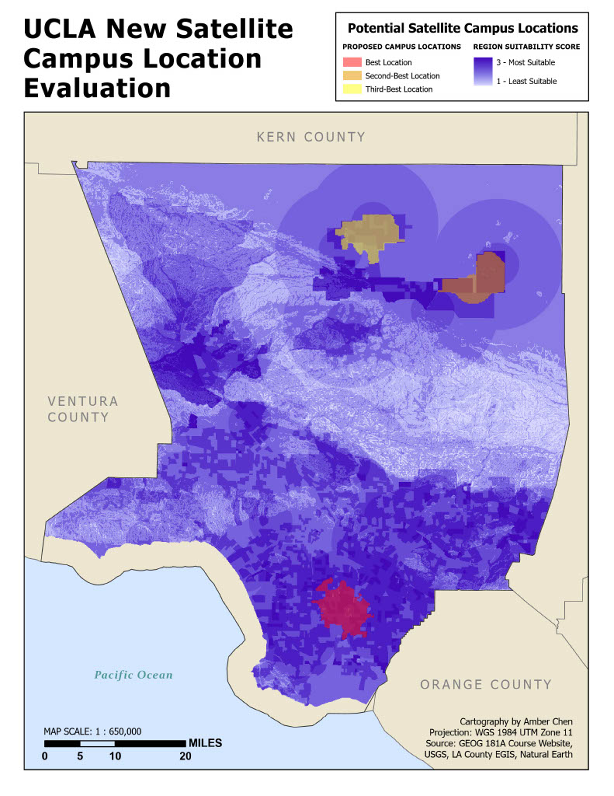
Skills: Suitability Analysis, Raster Spatial Analysis, Raster Algebra
Zion National Park Static Map
View Static Map{kind=link}

This map is a reproduction of NPS’s official park map, with adjusted symbology and labeling to improve the accessibility of information. My map’s main color scheme consists of shades of red, brown, and orange to match Zion’s natural landscape. To improve readability, I diversified the map’s point symbology, using intuitively understood symbols to further enhance clarity.
Previously, the parking lot icon for NPS maps was a small half-circle that was barely visible among all of the other features. To make it more prominent, I changed the icon to a white square with the letter “P,” which is commonly understood to be the parking symbol. This makes parking information easily accessible at a glance.
I also decided to make trailheads more prominent, by symbolizing them with brown diamonds. This makes them easy to spot for visitors seeking hiking routes, while preserving visual hierarchy. The diamonds are larger than the small, half-circle dots in the NPS map, but their muted brown color prevents them from overpowering other features.
For Zion’s surrounding areas, I symbolized towns with semi-transparent polygons to show their extents, offering more geographic context than the NPS point symbols. I omitted town elevation labels, which felt unnecessary for this map’s purpose. For significant elevation points, I replaced NPS’ small dots with triangles, a shape more intuitively associated with mountains.
On the NPS map, the big, bold title “Zion National Park” dominates the center, with small features squeezed between its wide kerning and line spacing. I took a different approach by moving my title outside the park boundary. Though it still remains the largest label, it sits in a corner where it doesn’t compete with smaller features. This freed up space for additional labels, such as Ivins Mountain, giving visitors more useful information. Adopting this labeling strategy in future NPS maps could help keep the focus on the park itself, instead of the title.
Some other labels I adjusted were those of towns, elevation points, and rivers. I set town labels in uppercase to emphasize them as area features and align them with their polygon symbology. For natural features like rivers and mountains, I chose serif fonts to distinguish them from other labels. I gave river labels semi-transparent halos to enhance their readability against the hillshade background. However, I chose to leave geographic features like plateaus and canyons in their original sans-serif, capitalized fonts to preserve clarity and neatness.
Overall, I believe NPS could implement these stylistic adjustments in future maps to make information more immediately readable and accessible to visitors. This way, their maps can allow visitors to understand key details at a glance, and continue on their merry ways to explore the beautiful parks!
Zion National Park Interactive Map
View in ESRI Map ViewerCheck out an interactive version of my Zion National Park map here!
Zoom in and out, pan to neighboring towns, and click on park features to
learn more about them! All features have been updated individually to
show pertinent information in their pop-ups.
To view my map legend, click the info box in the top left corner. To view map
layers and explore more, click the pop-out icon in the bottom right corner to
take you to ESRI’s map viewer.
Cartography 101: How Does Map Symbolization Affect Readability? Take a look below...
{kind=link}
View Rivers and Lakes of the Colorado River Region
{kind=link}
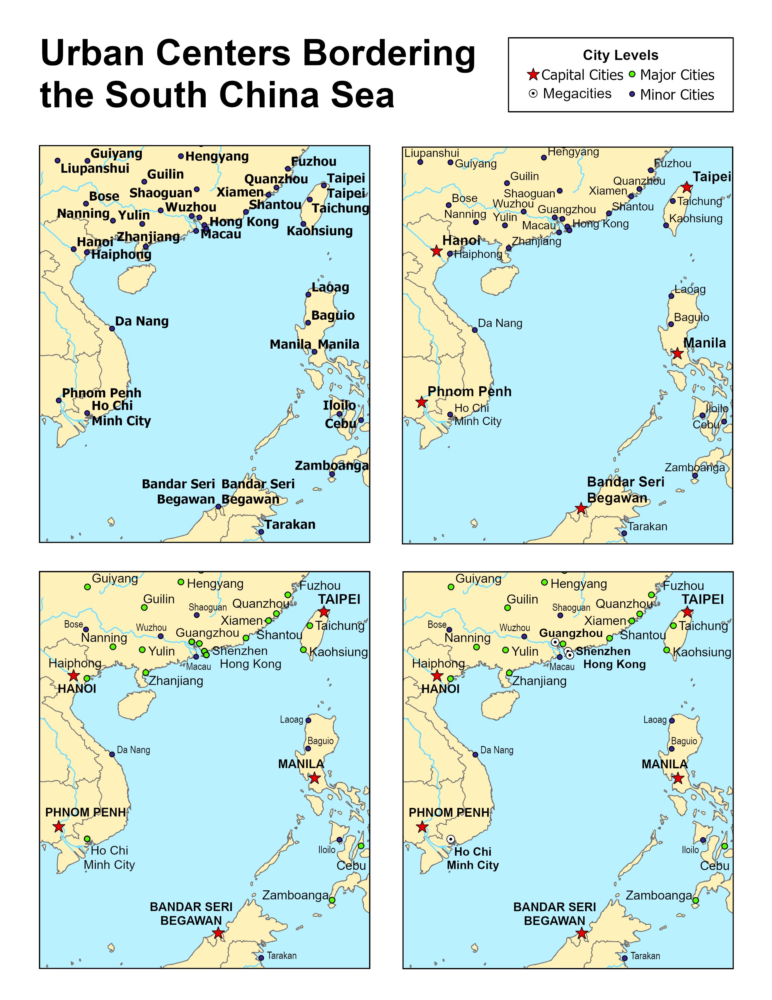
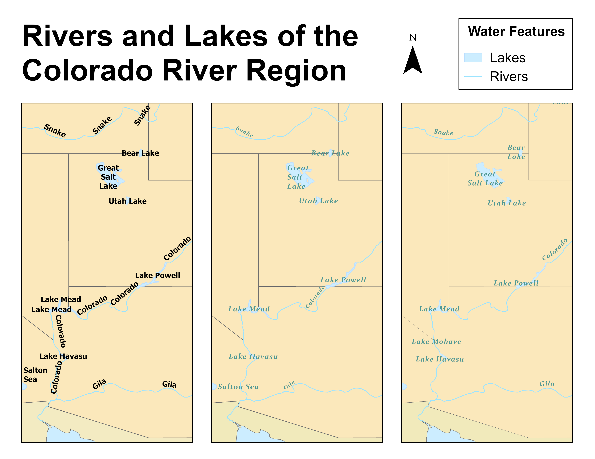
{kind=link}
View Geographic Features in the Western US
{kind=link}
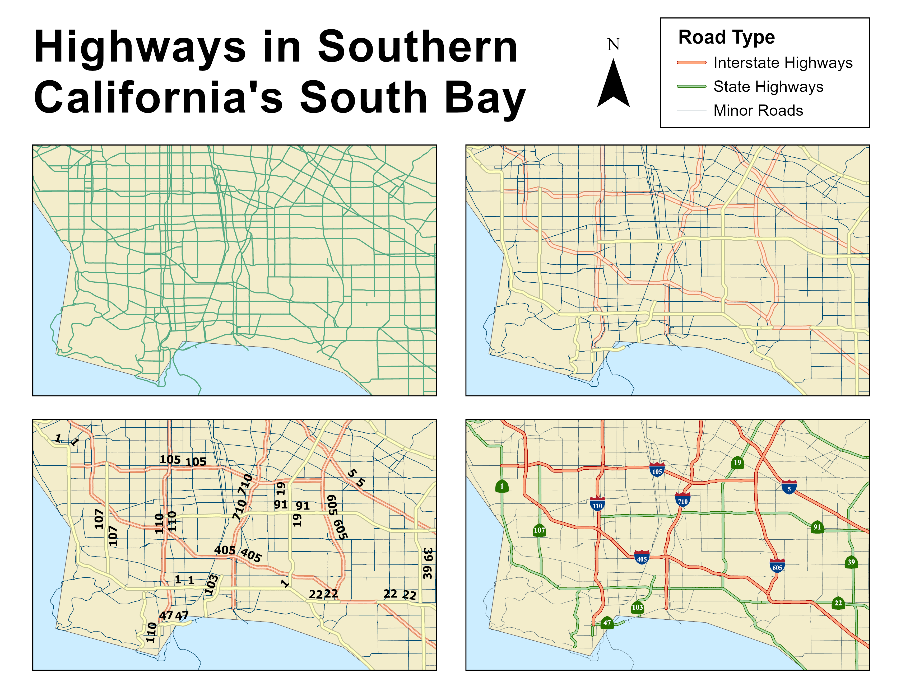
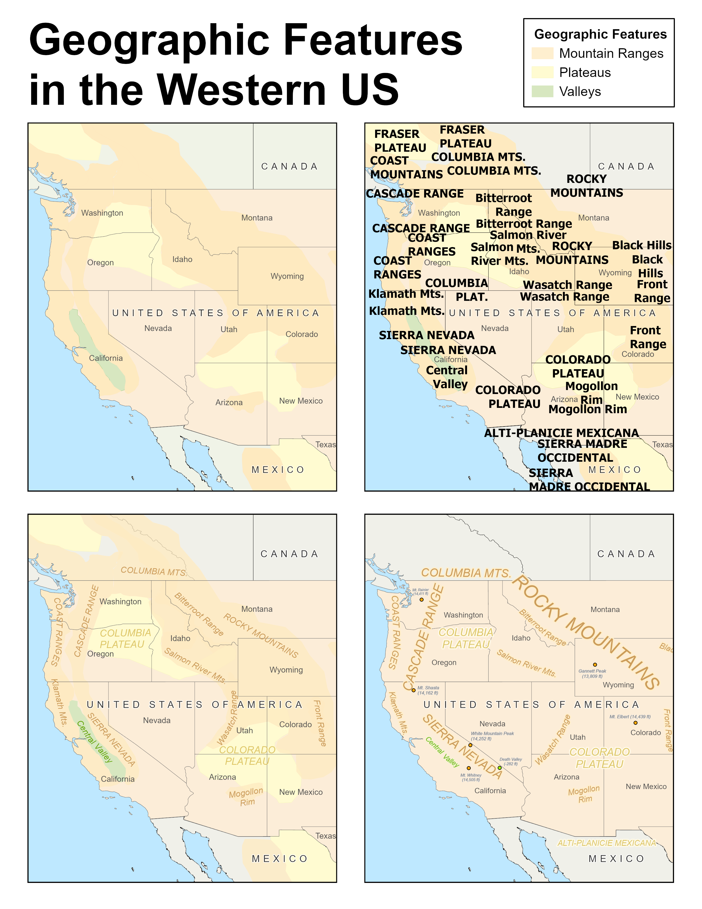
San Diego Median Housing Values Map
View Equal Interval Map{kind=link}
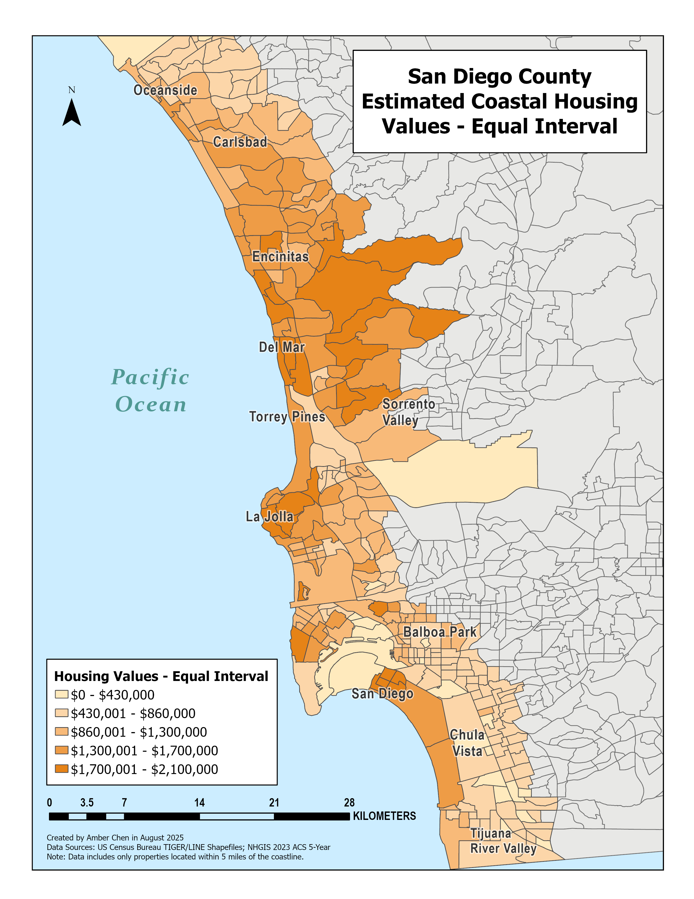
Equal Interval divides the range of prices into evenly sized value intervals. While this method is easy to understand, it glosses over some of the smaller variations within my data and ignores pricing clusters that otherwise fall in unequal categories. That being said, this distribution still does a good job of illustrating the most general patterns within the data, such as where counties with more high-value homes are located (e.g. La Jolla and Rancho Bernardo, which lies east of Del Mar).
{kind=link}
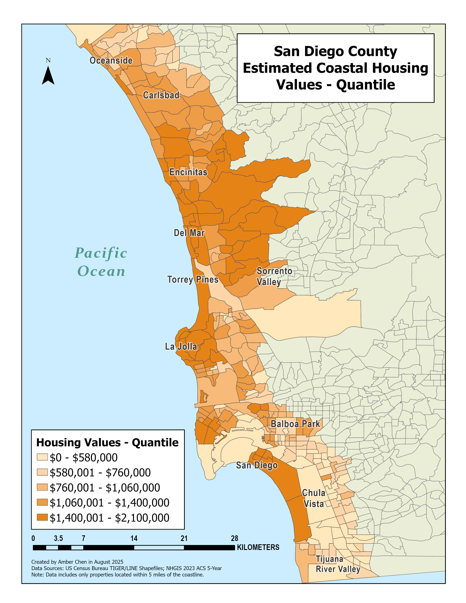
Quantile ensures an equal number of tracts in each class, which evenly distributes colors across the map. However, one downside is that it may place some tracts with similar values into different classes (or vice versa – place tracts with different values into the same class), which can distort and exaggerate our perception of actual price differences. In this instance, the quantile classification decreases the price range of the class with the second-lowest values just to even out the number of tracts in that class in comparison to the other classes. This potentially misleads our interpretation of that class.
{kind=link}
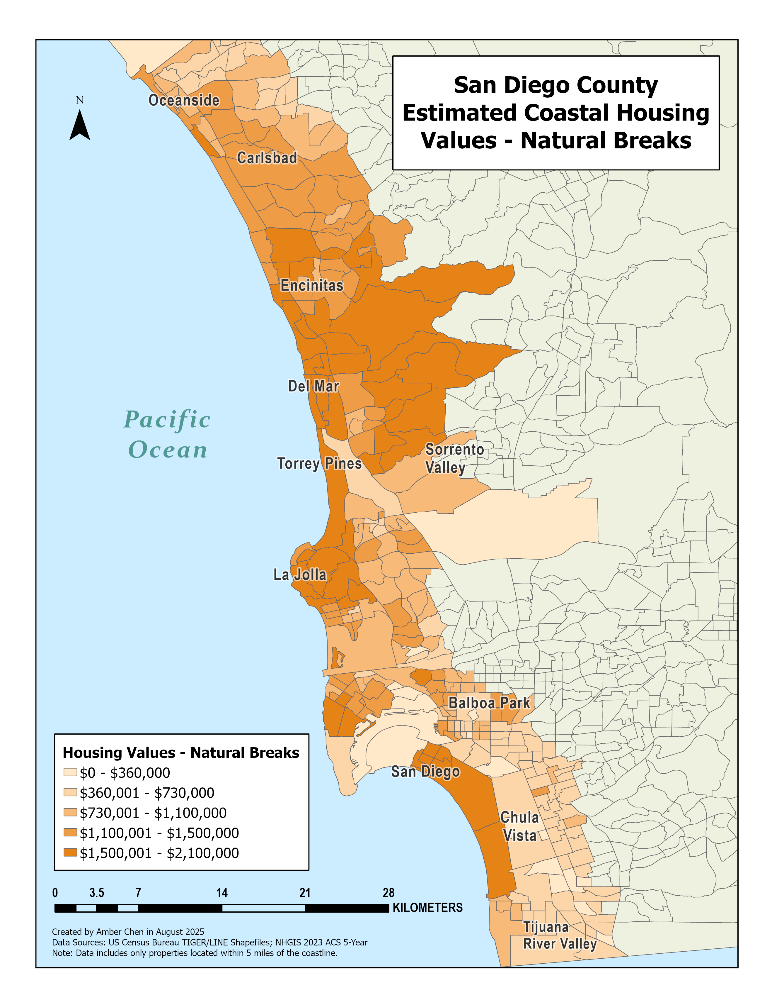
Natural Breaks groups tracts by natural gaps in the data, producing classes that reflect real clusters of values. Its grouping method captures meaningful differences between housing prices, thus avoiding the issues that Equal Interval and Quantile introduce. I think Natural Breaks best represents my dataset because the classes accurately represent real housing value patterns and allow us to spatially visualize overall high and lower value areas, without sacrificing accurate representation of the variation within the data.
{kind=link}
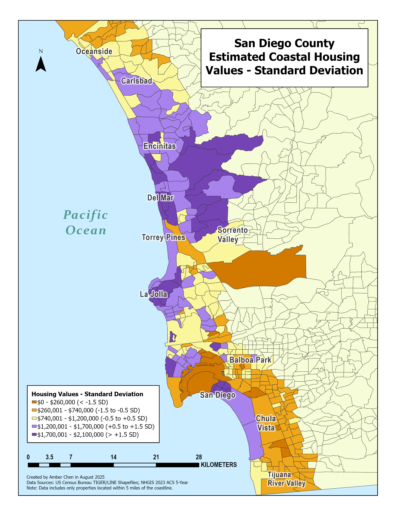